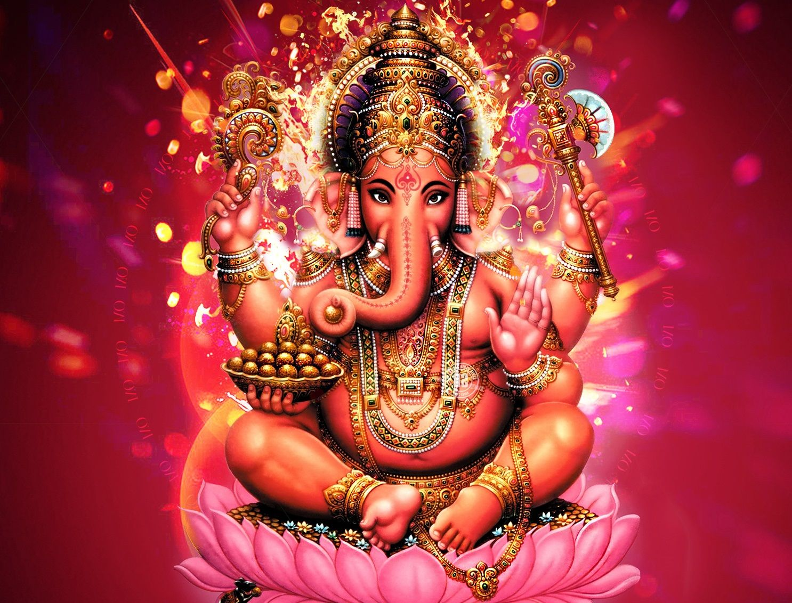

QUE BUSCA EL INDUISMO?
Busca laliberacion de la angustia de nuetra condicion ya sea mediante las modalidades de la vida ascentica, ya sea atraves de profunda meditacion,ya sea buscando rtefugio en dios con amor y fe.
QUIEN FUNDO EL INDUISMO?
Su fundador es desconocido.
CUAL ES LA DEIDAD MAXIMA DEL INDUISMO?
Brahman es la deidad maxima.
QUE TIPO DE DIOS TIENE EL INDUISMO?
Tienen un dios politeista,panteista,no teista.
NOMBRE Y NUMEROS DE LOS SEGUIDORES DEL INDUISMO?
Tienen 1140 millones de seguidores y se hacen llamar por hinduistas.
TEXTO SAGRADO DEL INDUISMO?
Los vedas
El romaiano
El bhagavad
Guita
Los puramas
LENGUA LITURGICA?
Es el sanscrito
DONDE NACE EL INDUISMO?
Nace en india
India
Nepal
Banglades
Malasia
CUAL ES LA DIFERENCIA ENTRE BRAHMAN,BRAHMA Y BRAHMANES?
El brahman es el absoluto, eterno y sin cambios, por otra parte Brahma es el dios creador creador del universo generalmente se le representa con 4 cabezas.
Por ultimo los brahmanes son la casta sacerdotal en el hinduismo
QUE ES LA CASTAS?
Es una realidad religiosa y social. La religiosidad hindu esta íntimamente trabado, son el hecho social de la división de castas
QUE SON LOS PURANAS?
son textos escritos entre el siglo lv y xll de nuestra era. Encontramos en ellos las leyendas sobre kala, varuna, indra y demás dioses
EN EL INDUISMO HAY DOCTRINAS Y SI PORQUE ?
el hinduismo carece de una doctrina única. Cada rama de dicha religión sigue la suya propia.
CUANTOS CAMINOS TIENE EL INDUISMO?
son 3 caminos
CUALES SON LOS 3 CAMINOS DEL INDUISMO?
el karma marga “El sendero de la acción”
CUAL ES LA CASTA SUPERIOR?
los brahmanes son la casta mas alta
CUANTAS CASTAS HAY?
hay 4 castas que son las categorías principales
EN CUANTOS ESTADOS ES MAYORITARIO EL INDUISMO?
el hinduismo es practicado como religión mayoritaria por el 85,5% de la población de la india y el 80% de Nepal,
así como la isla de balí en indonesia y la isla mauricio
EN QUE LUGAR NACIO EL INDUISMO?
en la india
SEGUN EL INDUISMO COMO SE CREO EL UNIVERSO ?
en cuanto a la creación del mundo en el hinduismo existe varios famosos relatos que se completan.
Según el hinduismo, brahman es el dios creador del universo
CUALES SON LAS COSAS QUE TIENEN PROHIBIDO LAS PERSONAS QUE HACEN PARTE DEL INDUISMO?
tienen prohibido comer carne
no se pueden casar con personas de castas diferentes
EN EL INDUISMO HAY UN LIDER RELIGIOSO?
no hay ninguna figura que ejerza globalmente el liderazgo religioso del hinduismo. En parte por que se trata de un conjunto heterogéneo
de practicas tradicionales. No hay una iglesia hinduista propiamente dicha.